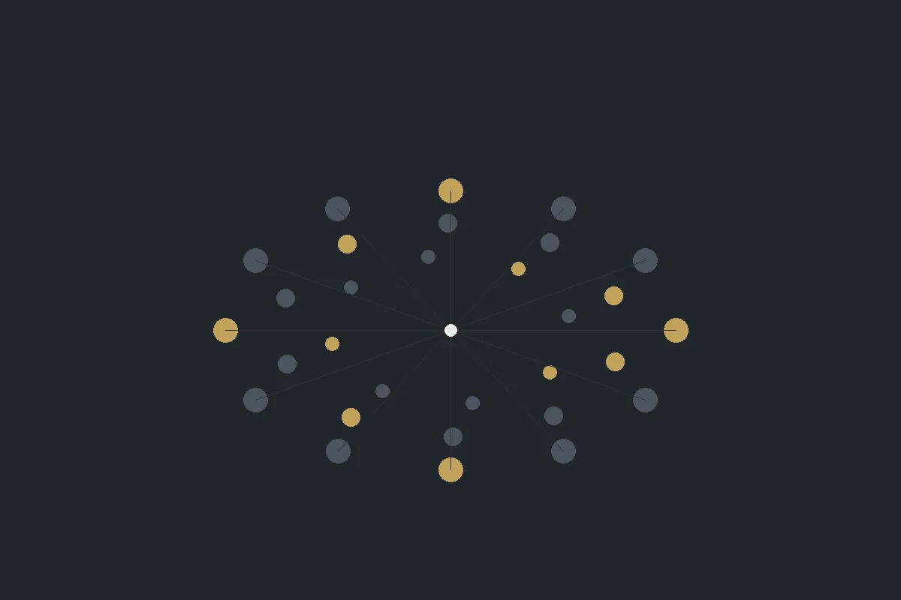

Rådgivning · Stokke
Vi utvikler mennesker og organisasjoner.
Skagerak Consulting jobber med forretningsutvikling, rekruttering og ledelses- og organisasjonsutvikling – med et internasjonalt nettverk av rådgivere.
ForretningsutviklingRekrutteringLedelse
01 — Tjenester
Tre områder
Vi jobber med både strategi og menneskene som skal gjennomføre den.

02 — Om selskapet
Rådgivere og nettverk
Vi har egne rådgivere og et internasjonalt nettverk. Det gjør at vi kan sette sammen team etter oppdraget – og hente kompetanse utenfra når det trengs.
- Rådgivere – med erfaring fra næringslivet.
- Nettverk – internasjonalt.
- Referanser – fra flere bransjer.
03 — Slik jobber vi
Fire steg
Fra samtale til gjennomføring.
- Samtale
Hva som skal utvikles, og hvorfor.
- Analyse
Kartlegging av situasjonen.
- Gjennomføring
Workshops, prosess eller rekruttering.
- Oppfølging
At endringen holder.
Vi utvikler mennesker og organisasjoner
Ta kontakt for en samtale om hva som skal utvikles – og hvem som skal gjøre det.